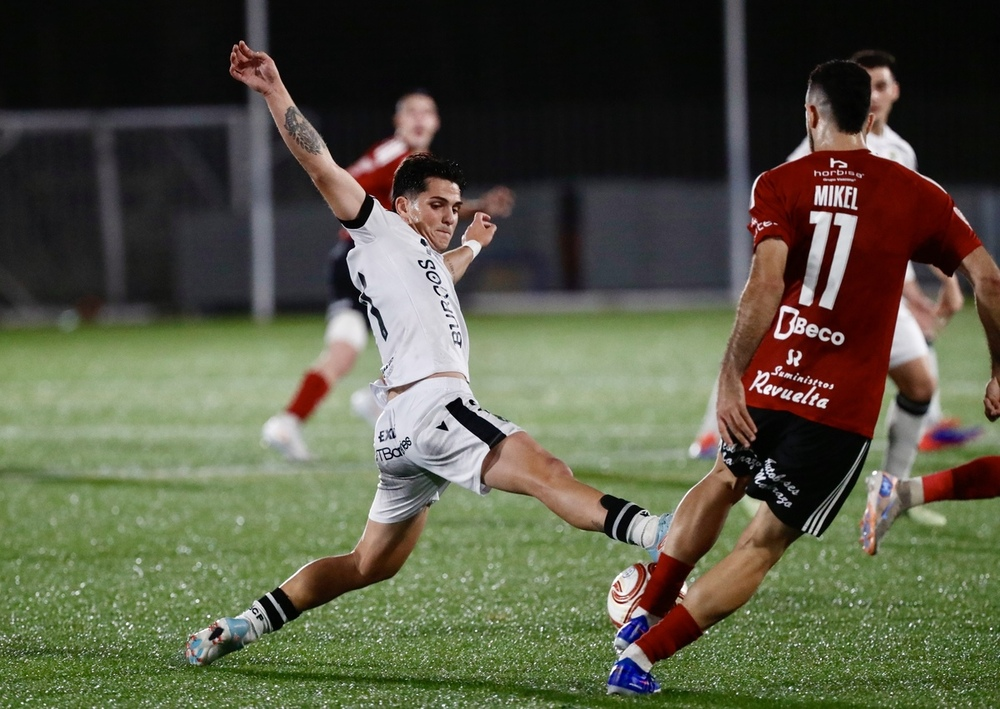

El conjunto burgalés seguirá en la Copa del Rey tras su victoria por 2 goles a 4 frente a un Laredo que, pese a estar tres categorías por debajo, plantó cara hasta el final.
Sergio Francisco afrontó el partido con un once lleno de rotaciones, incluso con dos jugadores del filial: David Hernáez e Irian Rivas.
El partido comenzaba con un Burgos CF superior, con acciones como la de David Arnaiz, en el minuto 2, que le cae el balón en el área pequeña tras un muy buen centro de Irian; sin embargo, el balón se va por encima de la portería cántabra.
Los locales se encontraban muy replegados, con las líneas muy juntas. Con el paso de los minutos, los cántabros se encontraban mejor atrás, impidiendo al Burgos llegar con tanta facilidad como los primeros minutos del encuentro.
Aun así, en el minuto 20, Gragera ponía el primero en el marcador, con un cabezazo tras la ejecución de un saque de esquina. Logrando así su primer gol con el conjunto castellano.
El Laredo intentó reaccionar tímidamente, pero sus intentos no inquietaban la portería de Bruno Iribarne.
Los 400 aficionados burgaleses se hacían notar en el Palomar.
Lo intentaba, en el minuto 30, Carlos Álvarez tras una incorporación al área, que frenaba Saúl del Cerro.
El conjunto local empezaba a gustarse y, en el minuto 35, tenía la más clara por mediación de Andrés Carral, que terminaría pasando muy cerca de la portería burgalesa.
Tras esto, el Burgos reaccionaba y es Mollejo, que, tras un gran pase de Iván Martínez en profundidad, lanzaba el balón muy cerca de la escuadra derecha de Juanje.
Una jugada después, el Laredo lo seguía intentando y era por mediado de una falta ejecutada por Arriola desde el medio campo, rematada por Carlos Álvarez, obligando así a Bruno Iribarne a emplearse a fondo. Aunque la jugada terminó anulada por fuera de juego.
El partido se igualaba, llegando al descanso con cero a uno en el marcador.
Tras el paso por los vestuarios, Chus Fernández movía el banquillo, sentando a Ramiro y Jaime y dando entrada a De La Maza y Dani Ojeda.
Los cántabros salieron a por todas. Andrés Cabral conecta con la cabeza tras un lanzamiento de esquina, poniendo el empate en el marcador.
El Burgos intentó reaccionar con un tiro de Mario Cantero de fuera del área, que apenas incomodó a Juanje.
Los visitantes tenían el balón en campo contrario, intentando entrar al área con centros laterales, que eran despejados sin dificultades por los locales.
En la hora de partido, Sergio Francisco introdujo pólvora en ataque para intentar sacar la eliminatoria adelante, dando entrada a Forés y Alberto Dadie por Mollejo y David Hernáez.
El tiempo le dio al entrenador burgalés la razón, ya que, tras solo 6 minutos, Alberto Dadie ponía por delante a los visitantes, tras un tiro de fuera del área desviado por un jugador local.
Chus Fernández movía el banquillo para buscar igualar de nuevo el encuentro, dando entrada a Lander Arenal, Ivanín y Primo.
Si bien Sergio Francisco acertó en los cambios, Chus Fernández no se iba a quedar atrás, ya que, a los dos minutos de mover el banquillo, Primo lograba poner el empate tras un gran centro de Lander Arenal.
Para buscar de nuevo adelantarse, el entrenador burgalés daba entrada a Lizancos y Galdames por Sergio González y Gragera.
Dadie lo volvía a intentar en el minuto 76 con un tiro mordido desde la frontal que detenía Juanje sin gran dificultad.
El Laredo empezaba a crecerse, sintiéndose cómodo atrás e intentando salir al contragolpe.
Sergio Francisco no quería la sorpresa y es por ello que, en el minuto 80, daba entrada a Llabres por Fermín.
Lizancos lo intentaba desde lejos, pero su disparo no inquietaba a la portería local.
El Burgos empezaba a llegar con más peligro y, ya en el minuto 86, Iván Martínez ponía el balón en el fondo de las mallas con un gran cabezazo, adelantando de nuevo a los burgaleses.
El Laredo no se vino abajo y, en la siguiente jugada, Mikel se encontraba el balón dentro del área.
En el descuento, con el Laredo al ataque, Dadie conseguía anotar su doblete con un gol desde fuera del área por la escuadra, sentenciando así el partido.
Dadie seguía con el gol en la cabeza y, a punto estuvo de conseguirlo, ya que estrellaba el balón en el palo.
Finalmente, el Burgos no se dejó sorprender y pasa a la siguiente ronda de la Copa del Rey.